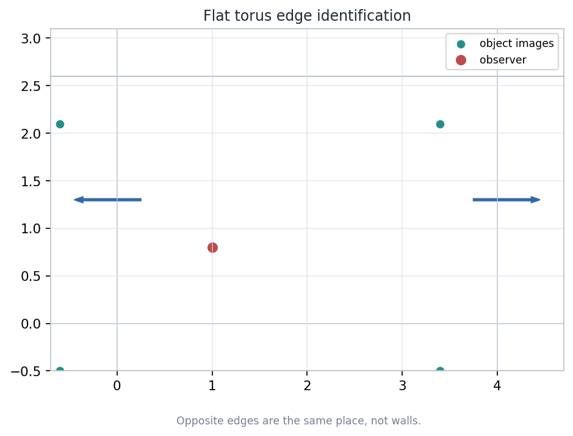
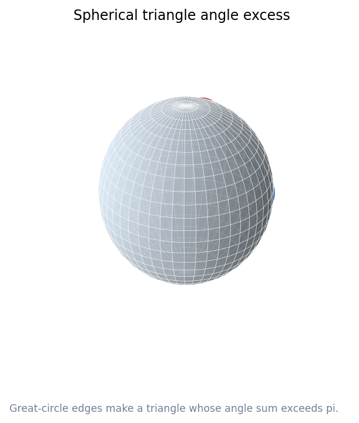
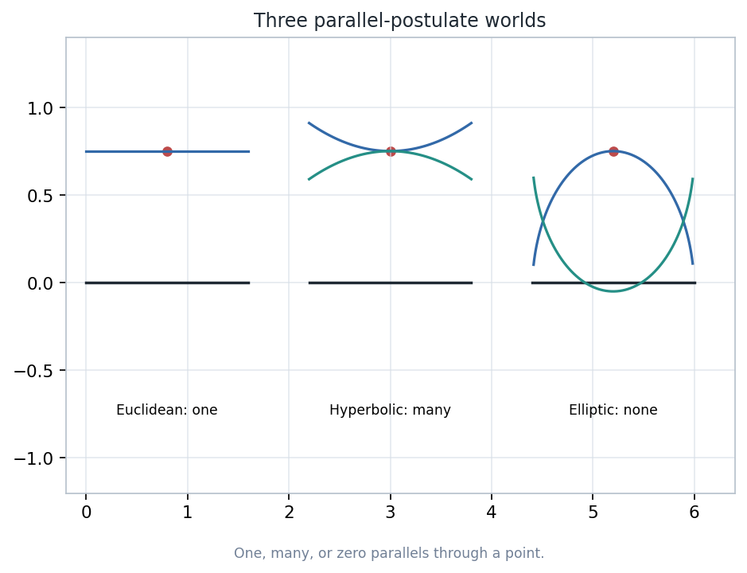
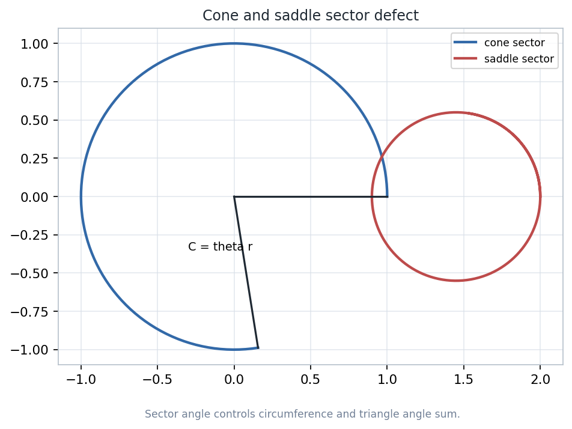
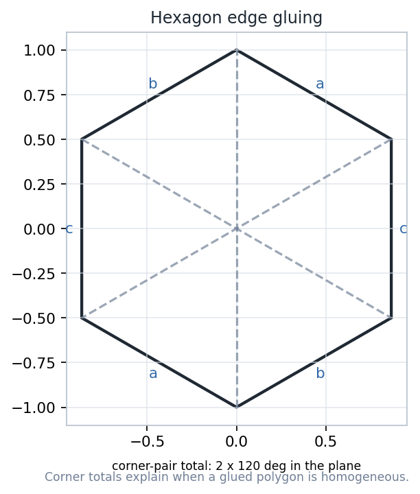
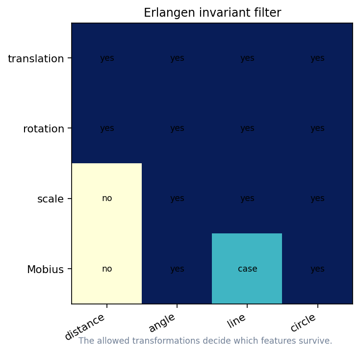

Geometry with an Introduction to Cosmic Topology, Chapter 1
Printed pages 1-14PDF pages 11-24
Lecture question. How can local measurements feel ordinary while global shape makes a universe finite, curved, or multiply connected?
Notebook: Geometry-with-an-Introduction-to-Cosmic-Topology/chapter-01-an-invitation-to-geometry/01-an-invitation-to-geometry.ipynb
The opening theme: coordinates may have edges even when the space does not.
A drawing is not yet a geometry. A geometry begins when a model is paired with transformations and invariants.

Opposite edges are paired locations, not barriers.
Start with a rectangle. Identify points whose coordinates differ by a whole width or height.
The square's border is a coordinate artifact. The quotient surface has no edge for an inhabitant to hit.
Lift the quotient to a grid of repeated tiles. The distance in the quotient is the shortest distance to any translated copy.

Great-circle edges can enclose more than \(\pi\) total angle.
Measure angles along intrinsic geodesics. Do not infer curvature from how the picture bends in the surrounding room.

Exactly one parallel line through the off-line point.
Many nonintersecting geodesics through the point.
No parallel geodesic; great circles meet.

Changing the sector angle changes small-circle circumference.
Remove a wedge and glue. The neighborhood has less angle than the flat \(2\pi\) benchmark.
Insert extra sector. The neighborhood has more angle than \(2\pi\), producing saddle-like spreading.

Edge labels encode topology; corner totals test local geometry.
If every point has the same local type, the surface can behave like a uniform geometry rather than a patchwork.

Allowed transformations decide which features count as geometric.
A property is geometric for a chosen setting when every allowed transformation preserves it.
Distance, angle, incidence, orientation, and topology become different invariants under different transformation groups.
The usual donut picture in three-dimensional space is not the same metric as the flat quotient torus.
A curve drawn on a surface is not automatically a shortest local path for that surface's metric.
An edge in a polygon diagram may mark an identification instruction rather than a physical wall.
Choose one artifact and explain the model, the transformation or measurement, and the visible evidence.